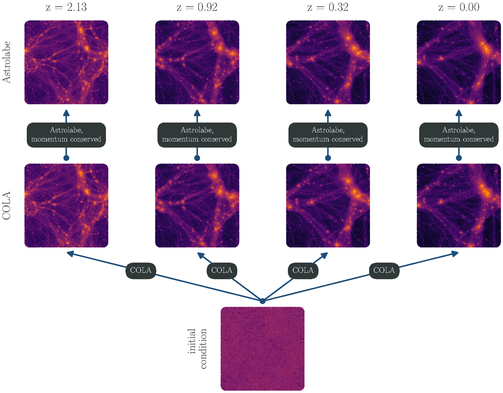
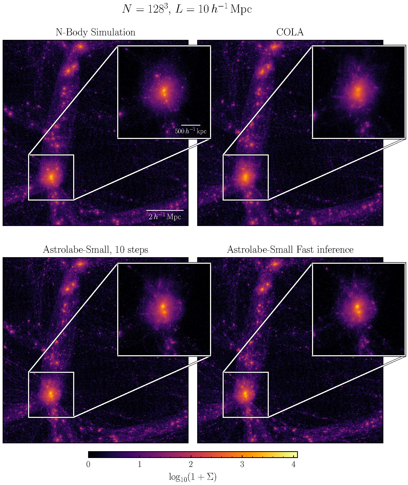
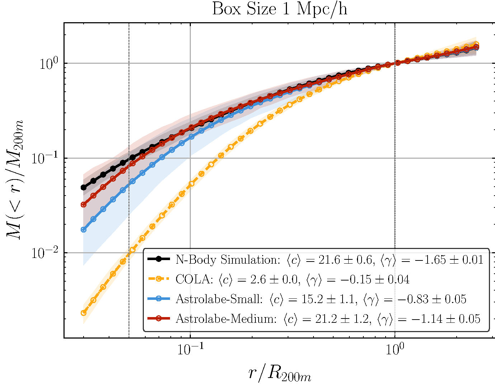

The microphysics of dark matter is thought to be imprinted on cosmological structure across an enormous dynamic range. The most reliable forward model of dark sector physics to nonlinear cosmological observables is the N-body or hydrodynamic simulation. At a cost of O(106) CPU-hours per full-resolution run, systematic scans over dark-matter theory space are computationally intractable with N-body simulations. Machine learning emulators provide a possible solution, but are currently limited by either low resolution or only the ability to emulate specific observables. We introduce astrolabe, a flow-matching-based generative emulator designed to be free of both constraints. astrolabe acts directly on the 6N phase-space coordinates of individual particles. With no voxel grid in the output, there is no voxel-resolution ceiling, and in principle any observable can be measured from inference. astrolabe is made computationally tractable by employing a field-particle hybrid transformer in which every particle cross-attends to multiscale field tokens, so compute and memory are linear in particle count N. We further introduce so-called physical flow matching to improve inductive bias. The flow transports approximate COmoving Lagrangian Acceleration (COLA)1 based positions rather than noise, and momentum conservation is exactly enforced at all points along flow time.

In the cases we test, astrolabe produces realistic fields with accurate power spectra, halo mass functions, and velocity profiles for the CDM fields it was trained on. We also observe out-of-distribution generalization, with accurate emulation of dark-acoustic oscillation initial conditions. We further find astrolabe capable of being fine-tuned to simulate large particle numbers, and we demonstrate this by emulating a TNG-50-dark simulation at a fraction of the cost. This method represents a first step toward a general and powerful cosmology simulation surrogate, which may eventually permit the inclusion of baryonic physics and richer dark sector interactions.


Gallery
Movies of N-body Simulation vs astrolabe for various test cases.
2M CDM
-
CDM, 10 Mpc/h: N-body simulation vs Astrolabe-Small
-
CDM, 1 Mpc/h: N-body simulation vs Astrolabe-Small
2M DAO
-
DAO weak, 10 Mpc/h: kpeak = 31 h/Mpc; N-body simulation vs Astrolabe-Small
-
DAO strong, 10 Mpc/h: kpeak = 18 h/Mpc; N-body simulation vs Astrolabe-Small
-
DAO weak, 1 Mpc/h: kpeak = 95 h/Mpc; N-body simulation vs Astrolabe-Small
-
DAO strong, 1 Mpc/h: kpeak = 32 h/Mpc; N-body simulation vs Astrolabe-Small
TNG-50/100-Dark-33
-
TNG50-3-Dark, z = 0: N-body simulation vs Astrolabe-Small, fine-tuned on TNG50
-
TNG100-3-Dark, z = 0: N-body simulation vs Astrolabe-Small, fine-tuned on TNG50
References
- S. Tassev, M. Zaldarriaga and D. Eisenstein, Solving Large Scale Structure in Ten Easy Steps with COLA, JCAP 06 (2013) 036. arXiv:1301.0322
- P. F. Hopkins, A new class of accurate, mesh-free hydrodynamic simulation methods, Mon. Not. Roy. Astron. Soc. 450 (2015) 53–110. arXiv:1409.7395
- D. Nelson et al., The IllustrisTNG simulations: public data release, Comput. Astrophys. Cosmol. 6 (2019) 2. arXiv:1812.05609